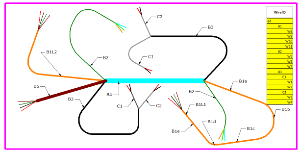

Working with nailboards
Nailboards document the manufacturing process of wire harnesses by flattening the 3D harness onto a 2D board to create a nailboard drawing view.

The flattened geometry is placed at a 1:1 scale and you can edit the geometry to make it properly fit on the board. Once you have the flattened geometry placed correctly, you can print the nailboard view.
From the nailboard drawing view, you can create a connector drawing view based on information associated with the harness. You can then use the information in the connector drawing view to create a connector table.
You can also create a conductor table, also known as a net wire list, which is basically a parts list of the wire harness.
Dimensions, annotations, and blocks in nailboards
Much of the draft functionality, such as dimensions, annotations, and blocks is available when working with nailboards.
You can place driven dimensions on the flattened geometry in a nailboard. However, you cannot edit the dimensions to make changes to the flattened geometry.
You can place annotations, such as callouts, based on all information associated with the flattened geometry.
You can place blocks on a nailboard view and associate it with the flattened geometry. However, you cannot use the nailboard view geometry to create blocks.